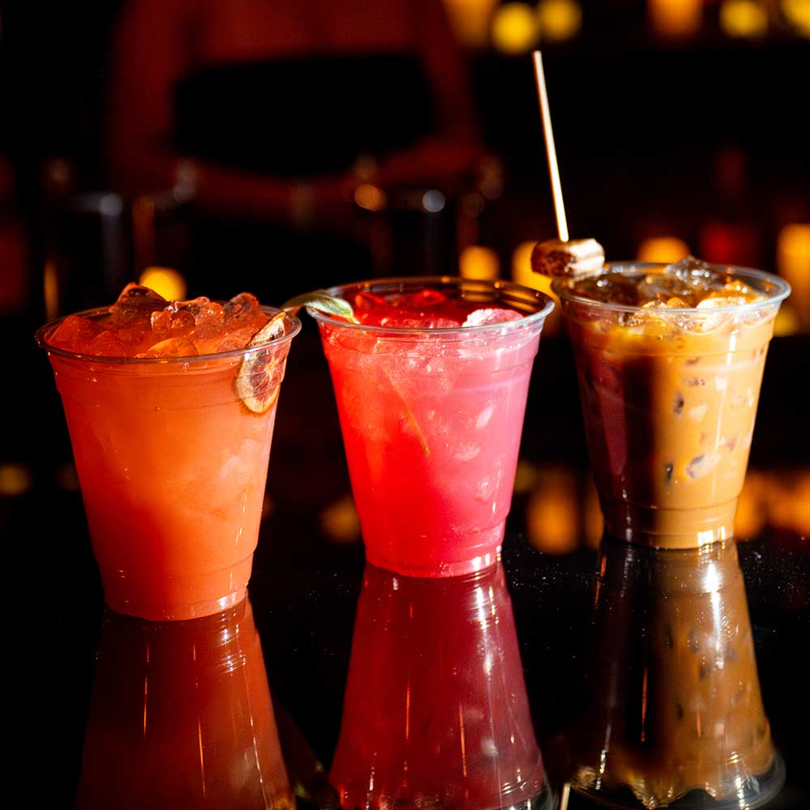
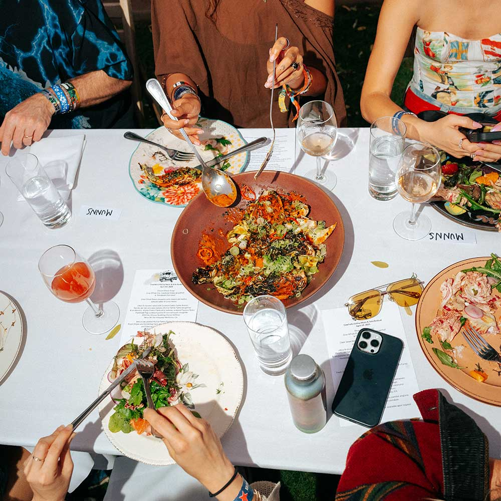

The Desert Table Is Set
From truffle pasta served on floral china to legendary churros dusted in cinnamon sugar, this year's Coachella food and drink lineup is the most curated, most talked-about, and most delicious the festival has ever seen. We went vendor by vendor, bite by bite, sip by sip, so you don't have to guess where to go when the music stops.

Pasta in the Desert
Penne in a silky vodka-tomato cream sauce, finished with shaved black truffle and a snowfall of parmesan, this isn't your average festival food. One of the most unexpected dishes on the grounds this year, it proves that Coachella's culinary ambitions have officially outgrown the food truck era.

Three Drinks, One Round
A blood orange paloma with a salted rim, a bright strawberry shrub with fresh mint, and a slow-poured iced Thai coffee topped with a toasted marshmallow skewer. Three totally different drinks, one unforgettable round. These are the sips that had everyone asking the person next to them where they got that.

The Long Table
MUNNS turned the open desert air into a proper dining room, long white linen tables, ceramic plates, wine poured into actual glasses. Festival strangers passed shared bowls of roasted vegetables and ceviche like they'd known each other for years. It was the most civilized, most beautiful thing we saw all weekend.

Crack It, Crush It, Cheers
Dark Horse showed up to Coachella the right way, canned, cold, and ready to be crushed under a palm tree. The Sauvignon Blanc is crisp and citrusy, the Rosé is dry and strawberry-forward, and both are exactly what you want in your hand when the afternoon set starts and the California sun is doing its absolute most.

Sip, Sip, Festival Season
Aperol Spritz showed up to Coachella the way they always do, loud, orange, and completely unbothered. Their Piazza activation was impossible to miss, and honestly, impossible to walk past. Equal parts photo op and full-on vibe, it was the kind of spot where you grabbed a spritz, found your people, and suddenly an hour had disappeared. See the full spread here.